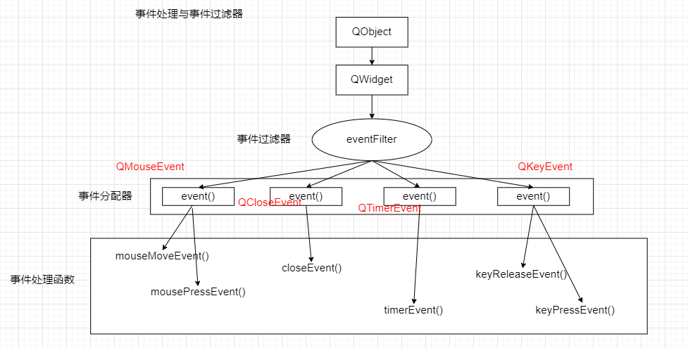

参考博客
【网络链接】Qt学习之路27--事件传递过程和事件过滤器
【网络链接】qevent accept()和ignore()函数
【网络链接】玩转Qt(5)-理解事件循环
事件循环的概念
一般对于带UI窗口的程序来说,事件是由操作系统或程序框架在不同的时刻发出的。当用户按下鼠标、敲下键盘,或者是窗口需要重新绘制的时候,计时器触发的时候,都会发出一个相应的事件。
名词解释
事件队列 : 事件发生后存储的位置
事件分发 : 处理事件
//一个事件循环的简易模型
function loop() {
//初始化一些资源
initialize();
//退出标识
bool shouldQuit = false;
while(false == shouldQuit) {//一直循环直到接收到退出标志
var message = get_next_message(); //获取事件
process_message(message); //处理事件
if (message == QUIT) {
shouldQuit = true;
}
}
}
Qt的事件
谁来接收事件?
QObject,任何一个想要接收并处理事件的对象均需要继承自 QObject, 可以选择重载 QObject::event() 函数或事件的处理全转给父类
谁来负责分发事件(处理事件)
对于没有GUI的qt程序,由 QCoreApplication 负责将QEvent分发给QObject的子类。对于有GUI的qt程序,由 QApplication 来负责
event()事件处理器与eventFilter()事件过滤器

事件和信号的区别
他们两个是不同的概念,不要弄混淆。信号是由对象产生的,而事件则不一定是由对象产生的(比如由鼠标产生的事件),事件通常来自底层的窗口系统,但也可以手动发送自定义的事件,可见信号和事件的来源是不同的。
事件既可以同步使用,也可以异步使用(取决于调用 sendEvent()还是 postEvents()),而使用信号和槽总是同步的(这里应该是指的在同一个线程中)
事件的另一个好处是可以被过滤。
事件的分类
根据事件的来源和传递方式,事件可分为以下三大类
1. 自发事件 : 这是由窗口系统生成的,这些事件置于系统队列中,并由事件循环一个接一个地处理。
2. 发布的事件(Posted events) : 该类事件由Qt或应用程序生成,这些事件由Qt排队,并由事件循环处理。
3. 发送的事件(Sent events) : 该类事件由Qt或应用程序生成,这些事件直接发送到目标对象,不经过事件循环处理。
来自网络--qt事件机制
事件主要分为两种 :
(1)在与用户交互时发生。比如按下鼠标(mousePressEvent),敲击键盘(keyPressEvent)等。
(2)系统自动发生,比如计时器事件(timerEvent)等。
在发生事件时(比如说上面说的按下鼠标),就会产生一个QEvent对象(这里是QMouseEvent,为QEvent的子类),这个QEvent对象会传给当前对象的event函数。如果当前对象没有安装事件过滤器(这个下文会提到),则会被event函数发放到相应的xxxEvent函数中(这里是mousePressEvent函数)。
Qt中所有的事件类都继承于QEvent类,这个QEvent对象会有各种各样的属性,这是由用户与界面交互时产生的。xxxEvent函数可以对其进行不同的处理(比如说是鼠标左键按下还是右键?)。如下代码所示:
class myLabel : public QLabel
{
protected: void mousePressEvent(QMouseEvent *event);
};
void myLabel::mousePressEvent(QMouseEvent *event)
{
if(event->Buttons == LeftButton) //通过Buttons属性判断 鼠标左键
{
//do sth
}
else if(event->Buttons == RightButton) //鼠标右键
{
//do sth
}
}
可以看到,我们首先需要先创建一个自己的QLabel类,并继承于Qt的QLabel类,然后重写相应的xxxEvent函数(这些事件处理函数都是虚函数)。
事件的分发:event函数
上面提到的xxxEvent函数,称为事件处理器(event handler)。event()函数主要用于事件的分发。所以,如果希望在事件分发之前做一些操作,就可以在派生类中重写这个event()函数了。例如,我们希望在一个QWidget组件中监听tab键的按下,那么就可以继承QWidget,并重写它的event()函数,来达到这个目的。
关注一下event函数的返回值含义:
(1) 返回true : 告诉Qt已经处理的这个事件,继续处理事件队列中的下一事件
(2) 返回false : Qt会把这个事件传递给它的父窗口部件来处理
(3) 返回 父类的event(QEvent*) : Qt把这个事件交个它的基类来处理,否则这个组件就只能处理我们定义的事件了。(一般用这个)
/*
在下面的例子中,因为没有调用父类QTextEdit的event函数,所以只能处理敲击Tab键的情况,你再按其他按键就啥反应都没有了。同样,事件也不能进行传播。
*/
bool myTextEdit::event(QEvent *e) {
if (e->type() == QEvent::KeyPress) {
//将QEvent对象转换为真正的QKeyEvent对象
QKeyEvent *keyEvent = static_cast(e);
if (keyEvent->key() == Qt::Key_Tab) {
qDebug() << "You press tab.";
return true;
}
}
return false;
}
事件的接受和忽略
【TODO】
事件过滤器(EvenFilter)
某些应用场景下,需要拦截某个对象发生的事件,让这个事件不再向其他对象进行传播,这时候可以为这个对象或其父对象安装一个事件过滤器(evenFilter)。QObject有一个虚函数,原型如下
/*
1. 返回 true : 告诉Qt已经处理的这个事件
2. 放回 false : 该函数未处理,交给Qt,Qt将会把这个事件发送给指定的目标对象
3. 返回 基类的eventFileter(QObject*, QEvent*):Qt把这个事件交给它的基类来处理(注意与返回false的区别)
*/
virtual bool QObject::eventFilter ( QObject * watched, QEvent * event );
//watched 表示已经安装了事件过滤器的对象
//event 表示要被处理的事件
可以看到,函数有两个参数,watched为被监听的对象,event为发生的事件。当事件是我们感兴趣的类型,可以就地进行处理,并令其不再转发给其他对象。
实际使用中,我们需要对QObject对象调用installEvenFilter函数,即为对象安装过滤器,才能使用事件过滤器这个机制。这样,该对象及其子对象的事件就会被监听。这个机制的好处在于不用像重写QEvent和xxxEvent函数一样需要继承Qt的内置类。
若同一对象安装了多个事件过滤器,则最后安装的过滤器首先被激活。当安装了多个事件过滤器之后,eventFilter函数返回false并不会使事件返回给目标对象,而是传递给下一个过滤器对象,当所有过滤器对象都不处理该事件时才会传递给目标对象。
//这里需要注意使用这个函数的意义,调用这个函数的对象A安装了filterObj对象的事件过滤器函数,这样A的事件都会被filterObj对象拦截
void QObject::installEventFilter ( QObject * filterObj );
下面举一个例子。MainWindow中有一个QTextEdit控件,我们拦截它的键盘按下的事件。这样处理之后,会在输出窗口打印出按下的键位,但不会在控件上显示。这表明事件已被拦截,不会去调用even函数。
class MainWindow : public QMainWindow
{
public:
MainWindow();
protected:
bool eventFilter(QObject *obj, QEvent *event); //事件过滤器
private:
QTextEdit *textEdit;
};
MainWindow::MainWindow()
{
textEdit = new QTextEdit;
setCentralWidget(textEdit);
textEdit->installEventFilter(this); //安装事件过滤器 this监听textEdit的事件
}
bool MainWindow::eventFilter(QObject *obj, QEvent *event) //过滤出来某个控件的某个事件
{
if (obj == textEdit)
{
if (event->type() == QEvent::KeyPress)
{
QKeyEvent *keyEvent = static_cast(event);
qDebug() << "you press" << keyEvent->key();
//事件不再进行传播,拦截
return true;
}
else
{
return false;//继续传播
}
}
else
{ //当不确定是否继续传播时,按照父类的方法来处理 即调用父类的evenFilter函数
return QMainWindow::eventFilter(obj, event);
}
}
同样的,even函数能干的事情,evenFilter也能干。比如说上面的处理键盘按下Tab键。
bool myObject::eventFilter(QObject *object, QEvent *event)
{
if (object == target && event->type() == QEvent::KeyPress)
{
QKeyEvent *keyEvent = static_cast(event);
if (keyEvent->key() == Qt::Key_Tab)
{
qDebug() << "You press tab.";
//拦截
return true;
}
else
{
//不进行拦截
return false;
}
}
//不进行拦截
return false;
}
我们可以对QApplication或者QCoreApplication对象添加事件过滤器。这种全局的事件过滤器将会在所有其它特性对象的事件过滤器之前调用。这种行为会严重降低整个应用程序的事件分发效率,要看具体情况使用。
另外,事件过滤器和被安装过滤器的组件必须在同一线程,如果这两个组件到了不同的线程,那么,只有等到二者重新回到同一线程的时候过滤器才会有效。
自定义事件与事件的发送
【TODO 】
总结
在使用Qt的事件机制时,应该按照以下思路进行。
(1) 重写paintEvent、mousePressEvent等事件处理函数。这是最普通、最简单的形式,同时功能也最简单。
(2) 重写event函数,event函数是所有对象的事件入口,QObject和QWidget中的实现,默认是把事件传递给特定的事件处理函数。
(3) 在特定对象上面安装事件过滤器。该过滤器仅过滤该对象接收到的事件。在QCoreApplication::instance()上面安装事件过滤器。该过滤器将过滤所有对象的所有事件,但会有多线程问题。【TODO 需要验证】
(4) 重写QCoreApplication::notify()函数。这是最强大的,和全局事件过滤器一样提供完全控制,并且不受线程的限制。【TODO 需要验证】
实际用例
Alt+F4的关闭功能,想屏蔽这个功能,但是因为这是个系统关闭消息,通过事件过滤等办法都截获不到关闭消息。
所以就在eventFilter中判断是否是Alt按键按下状态时的QEvent::Close消息,是的话在做处理,如果ALT按键已经抬起状态就不处理。
bool MainWindow::eventFilter(QObject *object, QEvent *event) //事件过滤器
{
if(object == this)
{
QKeyEvent *keyEvent = nullptr;
if(event->type() == QEvent::KeyPress )
{
keyEvent = (QKeyEvent *)event;
if((keyEvent->key() == Qt::Key_Alt))
{
qDebug() << "[eventFilter] this event is alt press";
m_blIsAltPress = true; //设置一个成员变量, 在事件过滤器中根据事件设置变量的值
return false;
}
}
else if(event->type() == QEvent::KeyRelease)
{
keyEvent = (QKeyEvent *)event;
if((keyEvent->key() == Qt::Key_Alt))
{
qDebug() << "[eventFilter] this event is alt press";
m_blIsAltPress = false;
return false;
}
}
}
return QMainWindow::eventFilter(object,event);
}
//关闭事件
void MainWindow::closeEvent(QCloseEvent *event)
{
if(m_blIsAltPress) //在具体的事件处理函数中,根据成员变量的值来处理事件
{
qDebug() << "[closeEvent] this event is alt+F4,but it be ignored";
event->ignore();
}
else
{
return QMainWindow::closeEvent(event);
}
}